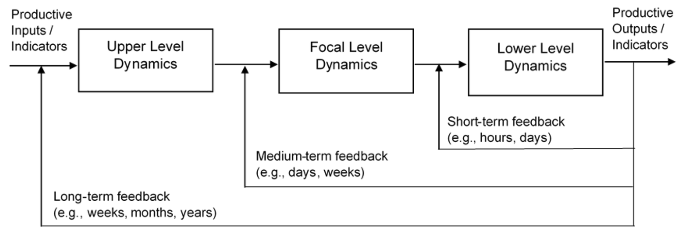

Behavioural economics · AI · Complex systems
Current research themes
My research examines how people make decisions and how behaviour, technologies and institutions evolve together. I combine behavioural economics, complexity science and computational methods to connect individual decisions with organisational change and wider social and economic outcomes.
Human–AI interaction and evaluation
How well can generative AI represent human values, attitudes, preferences and decisions? I investigate synthetic populations, or silicon sampling, through comparisons with human evidence, sensitivity analysis and cross-model evaluation.
This includes questions of cultural alignment, population heterogeneity, public opinion and organisational judgement. I’m interested in which research questions synthetic respondents can help address, and how to recognise the variation and uncertainty that their responses may miss.
Selected work
SurveyLM technical report ↗ (opens in a new tab)
Comparing human and synthetic data in service research · Journal of Services Marketing ↗ (opens in a new tab)
Using reminders with reward opportunities to reduce spectator no-show behavior · Journal of Business Research ↗ (opens in a new tab)
AI prediction and human understanding · The Conversation ↗ (opens in a new tab)
Technology adoption, work and capability
Why do some workers and organisations adopt new technologies productively while others face barriers, risks or uneven benefits? I combine behavioural and institutional analysis with labour market evidence, skill networks and models of adaptation.
I led the national study with Future Skills Organisation (FSO) of generative AI adoption by Australian workers, engaging a working group spanning government, employers, unions and professional bodies. Current research extends these questions to occupational mobility, capability evolution, professional identity and the ways institutions shape technological change.
Selected work
FSO's national AI adoption study & employer toolkit →
AI and big data in sustainable entrepreneurship · Journal of Economic Surveys ↗ (opens in a new tab)
AI copilots, work & professional identity →
Finding evidence in archives and interviews
I build research software for searching and analysing documents, archives and interviews. It combines semantic retrieval and language models with structured extraction and knowledge graphs, keeping results linked to the original material.
Projects include historical Spanish Inquisition records, scientific interviews through Web of Stories, and AI-assisted qualitative analysis. Researchers need to be able to check what the software has extracted against the source.
Selected work
Archival research & scientometrics platforms →
RiskWise AI-assisted qualitative analysis workflow →
Complex systems and behavioural economics
I study technological evolution as a complex adaptive process: people learn and make decisions, organisations develop capabilities, and institutions shape which changes persist. These micro, meso and macro levels influence one another through networks, feedback and adaptation.
My PhD brought behavioural economics and complexity science together to study interacting agents and limited information. That perspective now informs my work on workforce transitions, AI, digital platforms, public health, financial markets and mobility.
Selected work
Bridging Complexity and Behavioural Economics · PhD thesis ↗ (opens in a new tab)
Artificial intelligence in the field of economics · Scientometrics ↗ (opens in a new tab)
Cognitive architectures for artificial intelligence ethics · AI & SOCIETY ↗ (opens in a new tab)
How I work
Methods & approaches
I choose methods around the research question, the scale of the system and the available evidence. My work often combines empirical analysis with computational modelling and applied software development, with particular attention to validation, robustness, practical implementation and the assumptions underlying the results.
- Behaviour and evidence: survey design, experiments, behavioural economics, statistical analysis and econometrics.
- Systems and complexity: agent-based modelling and simulation, network analysis, scientometrics, geospatial and mobility analysis.
- AI and computational methods: machine learning, generative AI, synthetic populations (a.k.a. silicon sampling), computational experiments, model validation and benchmarking, structured information extraction and human-in-the-loop workflows.
- Research and project delivery: requirements definition, stakeholder engagement and co-design, feasibility and technology evaluation, business case development, risk management, quality management systems and ISO 9001-informed project management and delivery.
Across these activities, I work with interdisciplinary teams and external partners to translate technical methods, research evidence and practical implications for audiences across industry, academia, policy and the public.
Software & tools
- Research, analysis & modelling: Python, R, Stata, MATLAB, SQL, NetworkX, Gephi, QGIS and ArcGIS.
- AI development & agentic systems: LLM application development, agentic and multi-agent workflows, retrieval-augmented generation (RAG), semantic search, knowledge graphs, tool/function calling, structured outputs and Model Context Protocol (MCP) integrations.
- Application development: Django REST Framework, React, Streamlit and REST API development.
- Infrastructure & deployment: PostgreSQL, Docker, Git/GitHub, GitHub Actions (CI/CD), Linux/Bash, high-performance computing (HPC) and AWS (including Lightsail).
The Constrained Methods Matrix
My PhD thesis, Bridging Complexity and Behavioural Economics (QUT, 2023), developed a framework for choosing methods for complex problems. The Constrained Methods Matrix relates nine broad families of analytical methods to the number of causes involved, the scale of their effects, and the complexity and uncertainty of the information available.
The framework grew out of work with Professor Benno Torgler, building on ideas from Marvin Minsky, Aaron Sloman and Push Singh. Its boundaries are deliberately soft: statistical, qualitative and case-based reasoning may be useful together, and collecting different data can make other approaches feasible.
I also consider feedback between levels of a system. Individual behaviour can change an organisation, while organisational rules shape what individuals can do; these effects unfold at different speeds. The relevant focal level might be a workplace, a sector or a region.
View the methods matrix and feedback diagram
 Browse Figures 1–4
Browse Figures 1–4 
View largerIn the thesis, I applied this perspective to public health, financial markets, mobility and the development of AI. Read the complete thesis ↗ (opens in a new tab)
Research reach
Citations and readership
My work is read across economics, AI, public health and related fields. The figures below identify the source and the date it was last checked.
- Google Scholar citations
- 738Checked
- Google Scholar h-index
- 9Checked
- Field-weighted citation impact
- 4.70SciVal · snapshot
Google Scholar is checked weekly; the dates record the last successful refresh. View my current Google Scholar profile ↗ (opens in a new tab). SciVal is a dated snapshot, rather than a live counter.
Peer-reviewed publication venues
My peer-reviewed research has appeared in the following journals:
AI & Society (SJR 1.504, Q1); European Journal of Political Economy (SJR 1.131, Q1); Globalization and Health (SJR 1.692, Q1); Journal of Business Research (SJR 3.498, Q1); Journal of Economic Surveys (SJR 2.483, Q1); Journal of Services Marketing (SJR 1.536, Q1); Research in International Business and Finance (SJR 1.509, Q1); Safety Science (SJR 1.443, Q1); Scientific Reports (SJR 0.893, Q1); Scientometrics (SJR 1.077, Q1); Technology Analysis & Strategic Management (SJR 0.824, Q2); and Tourism Economics (SJR 0.998, Q1).
2025 SJR snapshot · Score and best subject quartile · Checked 29 October 2026
Journal-level SJR scores and quartiles, verified against public publisher and university research records. Quartiles vary by subject category; the best SJR quartile is shown here. This is a dated snapshot. Explore SCImago Journal & Country Rank ↗ (opens in a new tab)
Policy and public engagement
Where the research is being used
Employer resources and government evidence
The Future Skills Organisation study led to a national report, employer workshops and resources for organisations introducing generative AI. My work with IP Australia linked job advertisements, firm information and patent records to study AI investment.
FSO study and employer resources →
Download FSO’s SME AI Coach ↗ (opens in a new tab)
IP Australia: Drivers of AI Investment ↗ (opens in a new tab)
Citations in policy-facing research
My research has been cited in IZA discussion papers on AI and its economic implications. Two examples are:
- Artificial Intelligence and Entrepreneurship (opens in a new tab) (Fossen, McLemore & Sorgner, 2024), which cites my sustainable entrepreneurship research published in the Journal of Economic Surveys.
- The Future Economics of Artificial Intelligence: Mythical Agents, a Singleton and the Dark Forest (opens in a new tab) (Naudé, 2022), which cites my study of AI in economics published in Scientometrics.
These citations show my work contributing to wider policy discussions. The commissioned projects provide more direct examples of my research being developed into resources for government and employers.
News, media and public discussion
Selected reporting and commentary on my research, with further mentions and republications below.
- “Do attractive politicians govern differently than their peers?” (opens in a new tab)PsyPost · 7 July 2026 · coverage of my beauty premium research published in the European Journal of Political Economy.
- “Chancen und Grenzen der KI in der Ökonomie” (opens in a new tab)Makronom · Patrick Pobuda · 15 July 2024 · cites my study of AI in economics published in Scientometrics.
- “Diez circunstancias que nos abocan a una nueva pandemia” (opens in a new tab)The Conversation · Raúl Rivas González · 11 May 2022 · cites my research on globalisation and COVID-19 responses published in Globalization and Health.
- “List of philosophical problems” (opens in a new tab)Wikipedia · historical revision citing Cognitive architectures for artificial intelligence ethics (recorded in Altmetric).
Other outlets that have featured my work
The Quantum Insider; Communications Bureau Netherlands–Germany; Hacker News; MSN; Yahoo! News; Makronom; PsyPost; IT Boltwise; Desde Abajo; Le Point; The Conversation; El Mostrador; and E&N.
More coverage and public discussion
- “Dix circonstances qui mènent à une nouvelle pandémie” (opens in a new tab)The Conversation · 19 May 2022 · French edition of the pandemic article covering my paper published in Globalization and Health.
- “Beauty-Premium in der Politik: Optik beeinflusst das Regieren kaum” (opens in a new tab)IT Boltwise · 8 July 2026 · German-language coverage of my beauty premium study publised in the European Journal of Political Economy.
- “Diez circunstancias que nos abocan a una nueva pandemia” (opens in a new tab)NIUS / Telecinco · 13 May 2022 · republication of Raúl Rivas González’s article covering my paper published in Globalization and Health.
- “(Featured) Cognitive architectures for artificial intelligence ethics” (opens in a new tab)Institute of Futures Research · 13 June 2023 · research commentary on my AI ethics paper published in AI & SOCIETY.
Writing for a wider audience
I’ve written about synthetic respondents for The Conversation and co-authored public pieces on COVID-19 and the environment for the Nature research community.
Working across disciplines
Research collaborations
I work with researchers, students and practitioners across universities, government and industry. The collaborations range from joint papers and student supervision to software development, commissioned studies and resources for employers.
Universities and research organisations
At QUT, I work with ARC BITA, the Energy Transition Centre, the Centre for Data Science and eResearch. Collaborators are also based at the University of Western Australia, Universidad de Oviedo, Universidade da Coruña, UNSW, Maastricht University, Universität Tübingen, the University of Kassel and Griffith University.
Other research connections include CREMA, the Laboratory for Innovation Science at Harvard, WHU – Otto Beisheim School of Management, the University of Fribourg and CSIRO / Data61. My international exchanges have also involved the University of Economics Ho Chi Minh City and RMIT Vietnam.
Government, industry and health
Selected collaborators and project partners include Future Skills Organisation, IP Australia, the Queensland Department of the Premier and Cabinet, Queensland Department of Transport and Main Roads, Inspired Education Australia, Verbrec, Suncorp, Stryker Trauma, Impect, Metro South Health and Princess Alexandra Hospital.
The FSO project also drew on a national working group with representatives from government, major employers, unions, industry and small business bodies, including the Digital Transformation Agency, Commonwealth Bank, Woolworths Group, the Australian Council of Trade Unions and COSBOA. Project, team and working group details →
Want to discuss a potential research collaboration with me?